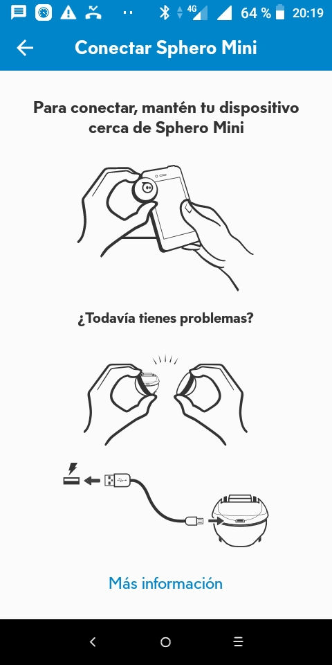

Encender y conectar con nuestra aplicación
Lo primero que nos sorprende es que no hay botón de encender, sólo se puede por software y es necesario un equipo con Bluetooth ya sea un móvil o un portátil.
A Robot en standby
Verás en Apagar que si el robot no se apaga y no se utiliza, al cabo de un rato está en standby, para encenderlo hay que hacerlo por la aplicación, se queda en standby hasta que se agota la batería.
A1 Con el programa en Windows
Entramos en el botón del robot:

No sale una lista de robots cercanos, y nos conectamos al que deseemos (en un grupo de alumnos, hay que tener claro cual es cual)

Y calibramos con los botones < y >, el punto luminoso del robot te tiene que ver a ti:

A2 Con la APP Android
Buscamos el mismo botón del robot:

Nos conectamos con el robot:

Y calibramos

Ya sabes, poner el punto que te mire a ti:

B Robot totalmente apagado
En ese caso:
1.- Conectar el robot al cargador. 2.- Cuando esté lo suficientemente cargado (si se pone en verde es que está totalmente cargado, si está en azúl es que se está cargando) lo desconectas. 3.- Está entonces en modo standby: procede como en los pasos anteriores A.
Si el robot está totalmente cargado ¿tengo que también poner el cargador? SI, eso provoca el resetedo Bluetooth y modo standby.

Problemas en la conexión
Pues proceder igual que en B, conectar el cargador y quitarlo (si tiene suficiente carga), eso provoca el reseteo del Bluetooth.
En la misma APP te recomienda también hacer lo mismo


Curso de SPHERO-MINI por varios autores bajo licencia Creative Commons Reconocimiento-NoComercial-CompartirIgual 4.0 Internacional License